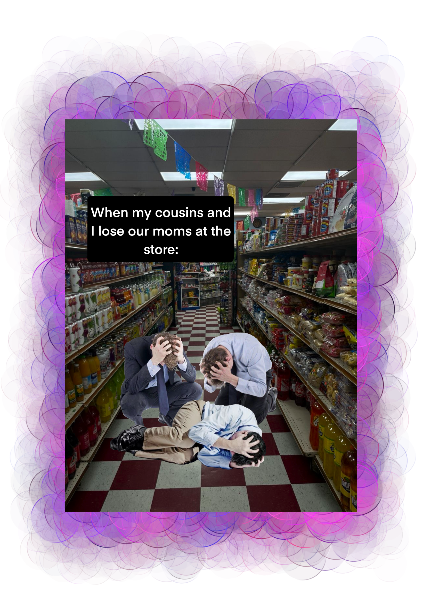

Meme Mashup
In this piece, I wanted to take more of a cultural view of the meme. The background is a photo of a mexican grocery store. These stores were a huge part of my childhood because normal generic grovery stores wouldn't have the ingredients my family and I needed for certain meals. On some occasions, my cousins would join us and we were allowed to go wherever in the store, look for candy, snacks, and whatever else we wanted. Most of the time we would get lost and freak out because we couldn't find the adults we came with.
